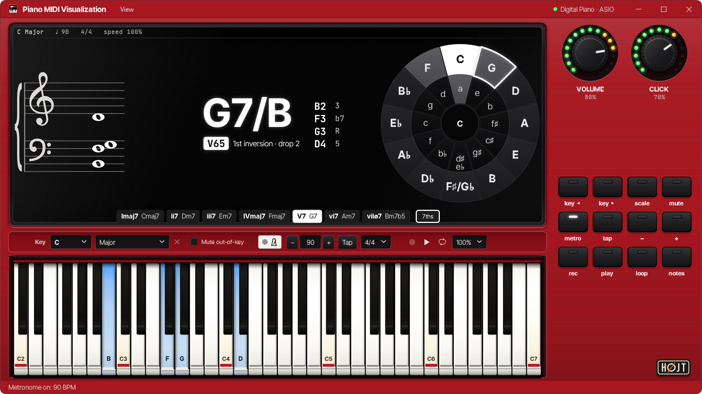
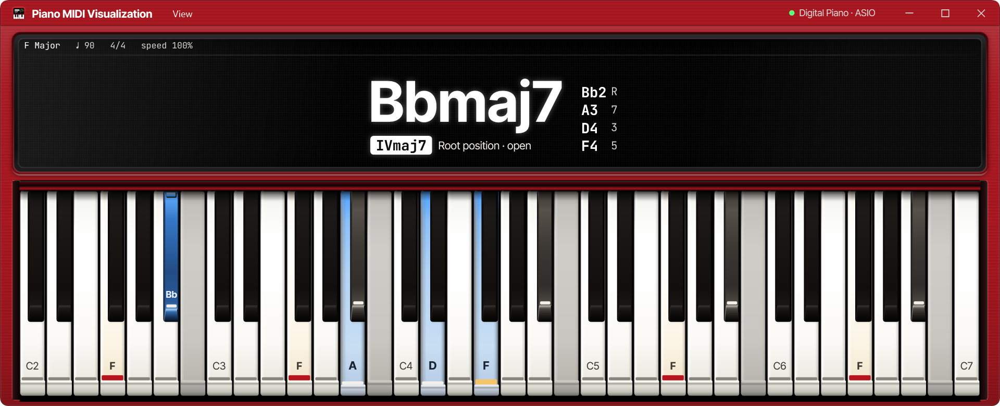

- Free
- Windows 10 and 11, 64-bit
- One .exe, no installer
- Open source, MIT
Tour
Five more screens of the app, each a screenshot of its own window.

F11 leaves only the chord readout and the keyboard. In F major, holding Bbmaj7: B natural and the black keys out of the key are dimmed, and the keys in it stay bright.
Harmony and keybed
Pick a chord in C minor to see how the app names it and which keys it dims.
C minor · 90 bpm · 4/4
Fm9
iv9 · Root position · open
Notes
F2 · Ab3 · C4 · Eb4 · G4
Intervals
R · b3 · 5 · b7 · 9
In the key
C · D · Eb · F · G · Ab · Bb
Dimmed
Db · E · Gb · A · B
- Tonic
- Held
- Out of the key
C
Db
D
Eb
E
F
Gb
G
Ab
A
Bb
B
What it shows
- The chord's name, its Roman numeral with figured bass, the inversion and the voicing, with every note spelled for the key and its interval
- A grand staff in the key signature, a circle of fifths to pick the key, and a strip of the key's seven chords that lights the one you play and plays any you click
- Twelve scales: major, three minors, five modes, both pentatonics and the blues. The keys out of the scale are dimmed, and the tonic is marked
- Knobs for Volume and the metronome's Click, and twelve keys for the key, scale, tempo, recording and songs
- Six pieces to practise with falling notes, and any .mid file of your own
- An optional AI assistant to ask about theory (Shift+F2). It needs your own API key for the AI service behind it
Download
One zip: the app as a single .exe, its licence and the notices of what it is built with. Nothing to install, no .NET to add.
What it needs
- Windows 10 or 11, 64-bit
- A USB MIDI keyboard or digital piano, or a 5-pin MIDI interface. Without one, the keys on screen can be played with the mouse
- An ASIO driver for about 5 ms of delay (your audio interface's, or ASIO4ALL), or the WASAPI output built into Windows
- A piano sound: any
.sf2SoundFont or.sfzpiano, for example the free Salamander Grand Piano or one from Musical Artifacts - The .exe is not signed yet. If Windows SmartScreen stops it the first time, click More info, then Run anyway
Setup and shortcuts
- Unzip and run. Unpack the zip anywhere, your desktop for example, and run
PianoMidiVisualizationApp.exe. - Choose a piano sound. Download a
.sf2or.sfzpiano and click 2 · Choose a piano sound in the checklist on the display. - Play. Your keyboard and the audio connect by themselves, now and every time after. Choose a key on the toolbar or the circle of fifths, and play.
Your settings, the window, the key and what you taught the keyboard are kept for next
time, in %LOCALAPPDATA%\.
Keyboard shortcuts
| Keys | Does |
|---|---|
| Ctrl+, | Opens or closes the settings: MIDI, piano sound, audio and the keys you taught |
| Ctrl+O | Opens a .mid file for song practice |
| Ctrl+M | Starts or stops the metronome, 30 to 240 bpm |
| Ctrl+R | Arms recording, which starts with your first note, or stops and keeps the take |
| Ctrl+Shift+R | Plays or stops the chosen take |
| Shift+F2 | Shows or hides the assistant |
| Shift+F3 | Shows or hides the MIDI log |
| Shift+F5 | Shows or hides the recorder |
| Shift+F6 | Shows or hides the circle of fifths |
| Shift+F7 | Shows or hides the strip of the key's chords |
| Shift+F8 | Shows or hides the grand staff |
| Shift+F9 | Switches between the chord readout and song practice |
| F11 | Zen mode: only the chord readout and the keyboard |
| Esc | Stops listening for a key to learn, or closes the settings |